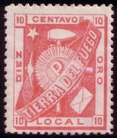
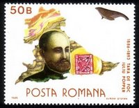

|
Iuliu
Popper, un explorator şi aventurier român, de origine evreiască, s-a născut
în 1857 la Bucureşti. La nici 30 de ani, Popper a devenit „Conchistadorul
Patagoniei” şi „Don Quijote al aurului Ţării de Foc”. Devine unul dintre
cei mai bogaţi oameni ai acelor vremuri, deţine mine de aur, bate monezi
de aur pe care îi apare numele şi tipăreşte mărci poştale locale.
Tânărul Popper, după studiile
din ţară, obţine diploma de inginer al Şcolii Politehnice din Paris. La
începutul anului 1886 ajunge la Buenos Aires unde se angajează să facă prospecţiuni
ţi studii
geologice în vederea exploatării aurului în Ţara de Foc. Zona unde lucrează
Popper era necartografiată în acel moment aşa că munţilor, râurilor
„descoperite” de el le dă denumiri româneşti. Astfel apare pe harta
geografică a lumii Rio Rosetti, Rio Ureche, Vârful Lahovary, Punta Sinaia,
Sierra Carmen Sylva. din Paris. La
începutul anului 1886 ajunge la Buenos Aires unde se angajează să facă prospecţiuni
ţi studii
geologice în vederea exploatării aurului în Ţara de Foc. Zona unde lucrează
Popper era necartografiată în acel moment aşa că munţilor, râurilor
„descoperite” de el le dă denumiri româneşti. Astfel apare pe harta
geografică a lumii Rio Rosetti, Rio Ureche, Vârful Lahovary, Punta Sinaia,
Sierra Carmen Sylva.
Î n
1891, Iuliu Popper decide să ia în propriile mâini conducerea Ţării de Foc.
În acel an el emite după monezi de aur şi mărci poştale. Macheta mărcii
poştale, emisă de către Popper a fost realizată de litograful Rodolfo Soukup.
Imprimarea colilor de timbre a fost realizată de Atelierul de Timbre a lui
J. H. Kidd y Cia din Buenos Aires. Tot aici au fost tipărite mărcile poştale
emise de Administraţia Poştala Naţională din Argentina. Grafica mărcii
reprezintă simboluri ale mineritului, respectiv ciocanul şi târnacopul,
peste care este desenat un soare în centrul acestuia litera „P” de la Popper.
Pe laturile desenului apare inscripşia „TIERRA DEL FUEGO” respectiv „DIEZ
CENTAVOS ORO LOCAL”, iar în cele patru colturi cifra „10”, reprezentând
contravaloarea, adică zece centigrame de aur. Culoarea mărcii este
trandafiriu aprins. Se cunosc printuri de probă de culoarea albastră. A fost
pusă în circulatie pe aşezările Companiei Popper, precum El Paramo, San
Sebastián, Carmen Sylva, şi Rio Grande-Colonia Popper. Timbrul Popper a fost
utilizat doar şapte luni în perioada ianuarie-august 1891.
Mărcile emise în urmă cu peste un secol
de Popper au fost botezate cu timpul „Timbrele Popper” şi sunt râvnite de marii colecţionari. Tirajul mic
şi perioada
scurtă de circulaţie efectivă a făcut ca exemplarele circulate, alături de
mărcile oficiale ale Argentinei, să fie extrem de rare. |
|
 |

Probă de culoare din colecţia autorului |
Ştampilografie

|